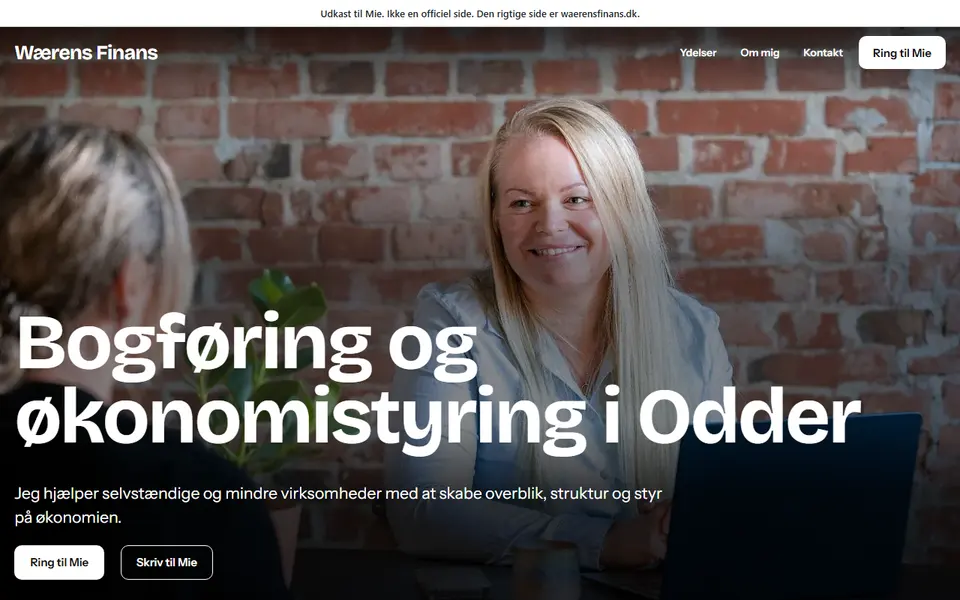
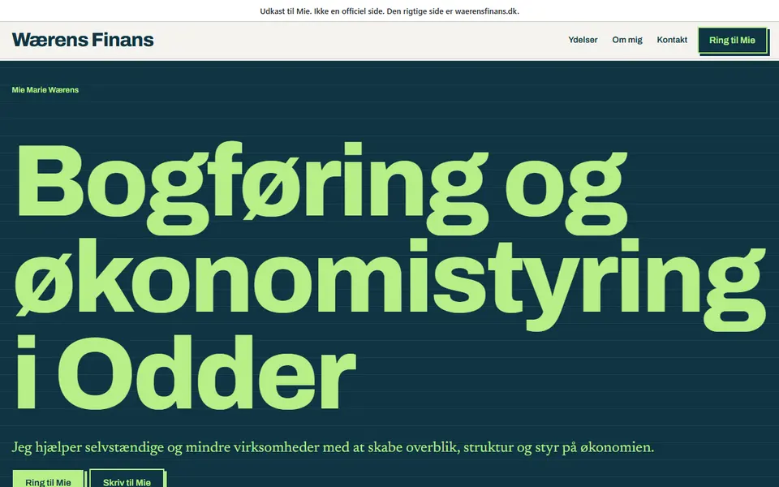
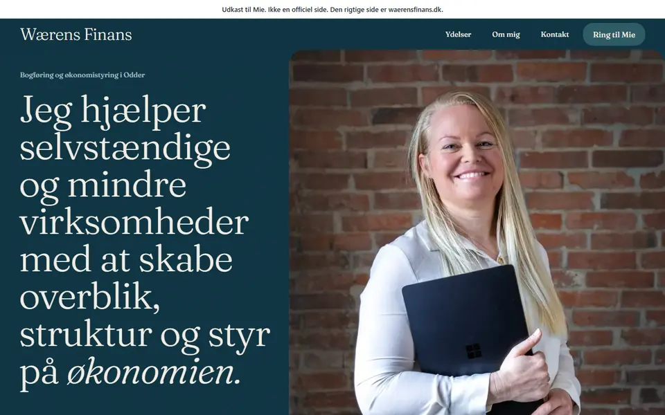

Tre forslag til Wærens Finans
Det her er tre udkast, som Mie kan sige sin mening om.
-

Forslag 1. Med foto
Billedet fra mødet fylder hele toppen. Varme farver og en tydelig liste over ydelser.
-

Forslag 2. Stor skrift
Det, der laves, sat med stor skrift på mørk baggrund. Billedet kommer længere nede.
-

Forslag 3. Med portræt
Portrættet og en sætning fra den nuværende side som overskrift, på mørk baggrund.